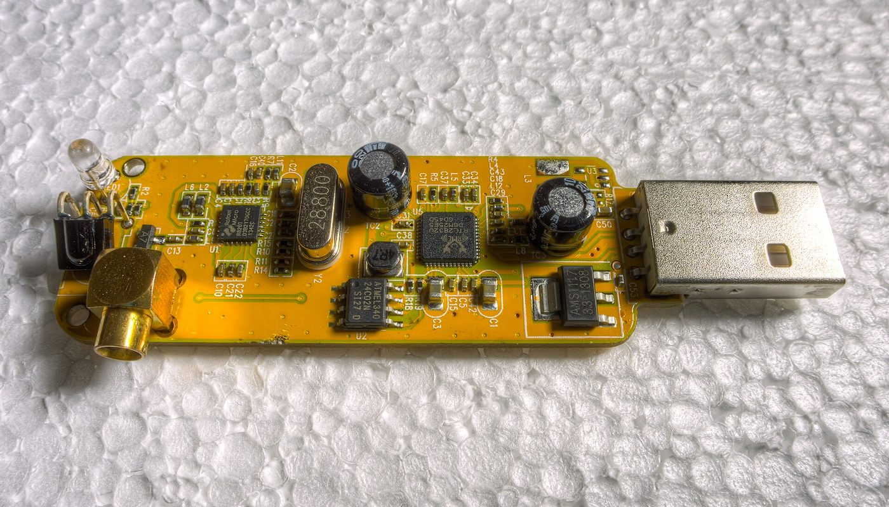
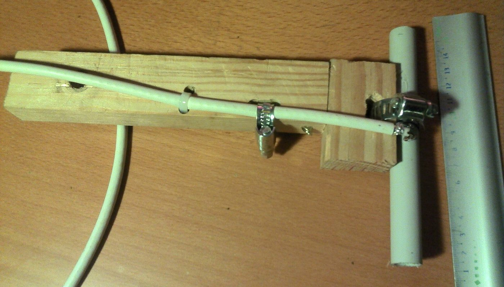

Récepteur radio logiciel · aucun lien affilié sur cette page · prix relevés le 2 oct. 2026
RTL-SDR : suivre les avions qui passent au-dessus de chez vous pour 29,50 € — et pourquoi les satellites météo NOAA que promettent les tutoriels n'émettent plus

Une clé USB de la taille d'un pouce — 29,50 € TTC chez un revendeur français, relevé le 2 octobre 2026 — transforme un ordinateur en récepteur radio de 24 à 1 766 MHz — sans trou : les avions qui passent au-dessus de votre tête, la FM, les radioamateurs, le trafic maritime. Le logiciel est libre et gratuit. Reste un détail que la majorité des tutoriels n'ont pas mis à jour : les satellites météo NOAA 15, 18 et 19 ne sont plus en service depuis août 2025 — et l'offre officielle du matériel a changé de puce au même moment.
Aucun lien affilié sur cette page — voir comment ça marche Prix lus le 2 oct. 2026 Logiciels libres : SDR++, dump1090, SatDump
En bref
- Le point d'entrée réel : clé RTL2832U + tuner R820T2/R860 (24 à 1 766 MHz) à 29,50 € TTC (28,62 € HT) chez Passion Radio, revendeur officiel RTL-SDR.com en France — en stock au 2 oct. 2026.
- La version « officielle » coûte environ 20 € de plus : la RTL-SDR Blog V3 (TCXO 1 ppm, SMA, bias-tee) se relève à 49,91 € TTC chez Passion Radio et 47,90 € TTC chez rf-market — le même produit, deux boutiques, 2,01 € d'écart.
- La V4 est en fin de vie, et c'est le fabricant qui le dit : le stock de puces R828D est épuisé (les dernières étaient des contrefaçons, écrit-il). Sa remplaçante V4L Lite est relevée à 49,92 € HT chez Passion Radio, en rupture annoncée « sous 1 mois ».
- Le kit complet : clé V4 + antenne dipôle polyvalente à 60,00 € TTC chez HackThePlanet — en rupture, commandable avec des délais plus longs.
- Le vrai malentendu : les satellites météo NOAA annoncés partout ne sont plus reçus depuis août 2025 (la source le dit elle-même en tête de son tutoriel). Ce qu'on reçoit encore, et avec quoi, est détaillé plus bas.
De quoi on parle exactement
Une clé RTL-SDR n'est pas un appareil de radioamateur : c'est une clé USB de réception TV numérique (DVB-T) dont la puce Realtek RTL2832U a été détournée. Le composant savait déjà transformer un signal radio en données numériques ; il a suffi d'écrire des pilotes libres pour lui faire recevoir n'importe quelle fréquence, au lieu des seules chaînes de télévision. C'est ce détournement qui a mis la radio logicielle à 30 €.
Concrètement, le matériel est la moitié de la dépense — et souvent la moins chère. Tout le reste est logiciel, libre, sans abonnement et sans compte à créer. Trois projets couvrent la quasi-totalité des usages, et les trois sont vivants :
- SDR++ — le poste de radio : spectre, waterfall, démodulation AM/FM/SSB. Dépôt public 6 384 étoiles, 893 forks, licence GPL-3.0, dernier développement le 5 juillet 2026 (interface GitHub, lue le 2 oct. 2026).
- dump1090 — le décodeur des avions : il transforme le signal ADS-B à 1 090 MHz en positions d'aéronefs. Dépôt de référence 1 145 étoiles, dernier développement le 14 août 2026.
- SatDump — le décodeur satellite : 2 273 étoiles, 296 forks, GPL-3.0, dernier développement le 30 septembre 2026. rtl-sdr.com le présente ainsi : « Because of it's good decoding performance, wide satellite and OS compatibility, it is the most recommended software for satellite decoding » (« en raison de ses bonnes performances de décodage et de sa large compatibilité de systèmes et de satellites, c'est le logiciel le plus recommandé pour le décodage satellite »).
Ce que ça implique, et que peu de guides disent clairement : vous n'achetez pas un appareil, vous achetez un récepteur nu. La qualité de ce que vous entendrez dépendra surtout de l'antenne, du câble et de l'endroit où vous posez le tout — pas du prix de la clé.
Les prix : ce qui est lu, où, et quand
Les montants ci-dessous ont été relevés le 2 octobre 2026 sur les fiches produits, en euros, chez des revendeurs qui expédient depuis la France. Quand la fiche affichait le prix hors taxes et le prix toutes taxes comprises, les deux sont donnés ; quand seul le HT était affiché, c'est écrit. Nous ne convertissons aucune devise et nous n'arrondissons rien.
Ce que coûte une clé RTL-SDR en France (€ TTC, prix relevés le 2 oct. 2026)
Barres proportionnelles aux montants ci-dessus, base à zéro. Aucune barre n'est estimée : les cinq montants sont des prix TTC lus sur les fiches le 2 octobre 2026. La V4L Lite de Passion Radio (49,92 €) n'apparaît pas dans ce graphique car sa fiche n'affichait qu'un prix hors taxes : elle figure dans le tableau, avec cette mention.
| Boutique | Modèle | Prix relevé le 2 oct. 2026 | Disponibilité relevée |
|---|---|---|---|
| Passion Radio (FR) | Clé RTL2832U + tuner R860 (≡ R820T2), 24–1 766 MHz, antenne 15 cm MCX incluse | 29,50 € TTC (28,62 € HT) | En stock (2 pièces, expédition FR 24–72 h) |
| rf-market (FR) | RTL-SDR Blog V3 R860 — TCXO 0,5 ppm, SMA femelle, boîtier aluminium | 47,90 € TTC | En stock |
| Passion Radio (FR) | Dongle RTL-SDR.com V3 — TCXO, SMA, bias-tee, tuner R860 | 49,91 € TTC (48,41 € HT) | En stock (plus de 10 pièces) |
| Passion Radio (FR) | RTL-SDR.com V4L Lite — tuner R828S, 500 kHz–1 766 MHz, TCXO, bias-tee | 49,92 € HT (aucun TTC affiché sur la fiche) | En rupture — « disponible sous 1 mois » |
| HackThePlanet (FR) | Kit RTL-SDR V4 + antenne dipôle polyvalente (60 cm de câble, brins télescopiques, trépied, ventouse) | 60,00 € TTC | En rupture — commandable, délais plus longs |
| Passion Radio (FR) | RTL-SDR.com V4 — tuner R828D, édition limitée | 63,90 € TTC (61,98 € HT) | « Ce matériel n'est plus disponible » |
Deux lectures utiles. D'abord, la version officielle n'est pas toujours plus chère ailleurs : la même RTL-SDR Blog V3 se relève à 49,91 € TTC chez un revendeur et 47,90 € TTC chez un autre, le même jour — la boutique compte autant que le modèle. Ensuite, le prix affiché ne dit rien de la disponibilité : sur les six lignes du tableau, deux sont en rupture et une n'est plus produite.
Ce qu'on reçoit réellement, et ce qui a changé
Trois usages reviennent dans tous les guides. Deux sont intacts ; le troisième a perdu ses satellites.
1 · Les avions (ADS-B, 1 090 MHz)
C'est l'usage le plus spectaculaire et le plus fiable : chaque avion en vol diffuse en clair sa position, son altitude et son identifiant. Avec une clé, une antenne adaptée à 1 090 MHz et dump1090, vous voyez le trafic au-dessus de chez vous sur une carte, sans compte ni abonnement. Aucun tutoriel ne dit le reste : la petite antenne livrée avec une clé d'entrée de gamme est taillée pour la TV, pas pour cette fréquence. Chez le revendeur cité plus haut, une antenne dédiée et un filtre-préampli ADS-B sont proposés en option sur la même fiche (l'option ADS-B relevée à 13,90 € le 2 oct. 2026).
2 · Les satellites météo : ce qui restait est en partie éteint
C'est ici que la documentation disponible en ligne est la plus trompeuse. La page de tutoriel de référence sur les images NOAA porte aujourd'hui cette note, en tête d'article :
Ce qui reste à 137 MHz : les satellites Meteor-M, dont le flux LRPT est décodé par SatDump (le relevé rtl-sdr.com documente une réception Meteor-M 2-3 sur 137,900 MHz). Un satellite météo se reçoit par passages de 10 à 15 minutes, uniquement quand il passe au-dessus de vous, avec une antenne adaptée — c'est un projet du soir, pas un service permanent.

3 · L'écoute radio (FM, radioamateurs, marine, signaux numériques)
Le reste est du ressort de SDR++ : stations FM, bandes radioamateur, trafic VHF maritime et aérien, et un grand nombre de protocoles numériques (ACARS, POCSAG, P25, DRM, capteurs 433 MHz) que le site du projet documente tutoriel par tutoriel. C'est là que la clé d'entrée de gamme et la version officielle donnent les résultats les plus proches — la différence se paie surtout en stabilité de fréquence.
Ce qui a changé côté matériel, en une image
Ce que les guides oublient de dire
- La V4 ne se produira plus — et la raison est racontée par le fabricant lui-même. Dans son annonce du 11 août 2026, rtl-sdr.com écrit : « the Blog V4 line of products was recently made end-of-life due to the exhaustion of the stockpile of Rafael R828D tuner chips that the V4 models require » (« la gamme V4 est passée en fin de vie à cause de l'épuisement du stock de puces R828D que les modèles V4 exigent »), et il précise que les derniers lots de puces trouvés chez des tiers étaient contrefaits. Autrement dit : acheter une « V4 » aujourd'hui dans une boutique qui n'est pas un revendeur identifié, c'est courir le risque d'une puce fausse.
- Le prix d'appel le plus bas que nous ayons vu a disparu en une journée. Notre veille avait relevé un clone générique à 11,90 € le 2 octobre 2026 ; au moment d'écrire cette page, la fiche renvoyait une erreur 404. Nous ne l'affichons donc pas comme un prix disponible : le vrai plancher vérifié, ce jour-là, est 29,50 € TTC en stock.
- Le connecteur d'antenne n'est pas le même selon le modèle. La clé à 29,50 € est équipée d'un connecteur MCX femelle — sa propre fiche précise que l'antenne à prendre doit être en MCX mâle. Les versions officielles V3/V4 sont en SMA. Un adaptateur MCX mâle vers SMA femelle était relevé à 5,15 € sur la même boutique. Commander une antenne SMA pour une clé MCX, c'est un colis inutilisable.
- Sous Windows, il faut remplacer le pilote. L'ancien tutoriel officiel du projet l'écrit noir sur blanc : « Run Zadig.exe […] Select Bulk-In, Interface (Interface 0) […] and click Install Driver ». Rien de compliqué, mais aucune clé ne fonctionne « brancher et écouter » sur un PC neuf.
- Le quartz des clés bon marché dérive. C'est la différence invisible entre l'entrée de gamme et les versions officielles : la TCXO (1 ppm sur la V4, 0,5 ppm sur la V3 de rf-market) stabilise la fréquence. Sur une clé non compensée, il faut corriger la dérive logiciellement, signal par signal.
- Le port USB compte sur un Raspberry Pi. Le guide d'installation d'un projet public consacré à ce matériel (Cascade-SDR) le note : les ports USB 3.0 brouillent le récepteur, il conseille les ports USB 2.0 et une courte rallonge pour éloigner la clé de la machine.
- La V4L « Lite » n'est pas un simple renommage. L'annonce du fabricant explique que la puce R828S n'a qu'une entrée RF de moins que la R828D : le filtrage passe de triplex à diplex, donc moins de filtrage en entrée (meilleure sensibilité, mais moins de protection contre les signaux forts — le test deux tons serait identique à celui de la V3). Une économie de prix, pas un gain universel.
Trois étapes, dans cet ordre
Le seul mauvais achat vraiment fréquent n'est pas de prendre la clé la moins chère : c'est de commander une antenne incompatible, ou de croire qu'un tutoriel de 2019 décrit encore le ciel de 2026.
La checklist avant de commander
- Vérifiez le connecteur d'antenne du modèle exact : MCX femelle sur les clés d'entrée de gamme, SMA femelle sur les V3/V4 officielles. Prévoir l'adaptateur si besoin (relevé à 5,15 €).
- Regardez la ville d'expédition. Les deux revendeurs cités expédient depuis la France en 24–72 h ; les boutiques du fabricant annonçaient, en août 2026, des envois depuis la Chine pour les premiers lots de V4L.
- Vérifiez la disponibilité, pas seulement le prix : deux des six modèles relevés étaient en rupture et un troisième n'est plus produit.
- Choisissez l'usage avant le modèle : avions (antenne 1 090 MHz), satellites (137 MHz, passages de 10–15 min), écoute générale (la clé d'entrée de gamme suffit).
- Prévoyez la correction de fréquence si vous n'achetez pas de TCXO : elle se règle dans SDR++, mais il faut savoir qu'elle existe.
- Ne comptez pas sur les satellites NOAA : ils ne sont plus en service depuis août 2025. Si c'était votre motivation, visez Meteor-M avec SatDump.
- Méfiez-vous des « V4 » à prix cassé : le fabricant signale des puces contrefaites dans les stocks tiers.
Par où commencer, concrètement
Ces liens sont ceux des projets et des revendeurs cités. Aucun n'est affilié : ils sont là pour que vous vérifiiez les prix, les connecteurs et les logiciels à la source.
- Comprendre le matériel : rtl-sdr.com, sa prise en main et son annonce de la V4L Lite (11 août 2026).
- Le logiciel d'écoute : SDR++ (GPL-3.0).
- Les avions : dump1090 — pensez à l'antenne 1 090 MHz.
- Les satellites : SatDump et sa documentation. La page NOAA de rtl-sdr.com est archivée, ne la suivez plus.
- Voir une clé et son prix : la V3 officielle (49,91 € TTC le 2 oct. 2026), la même V3 chez rf-market (47,90 € TTC), la clé d'entrée de gamme en MCX (29,50 € TTC).
Le réflexe qui évite le mauvais achat : décidez d'abord ce que vous voulez capter. Une clé à 29,50 € et une bonne antenne battent une clé à 63,90 € avec la mini-antenne d'origine.
Questions
Peut-on encore recevoir les images des satellites météo NOAA ?
Non. La page de tutoriel de référence porte une note « 2025 Update » : les satellites NOAA 15, 18 et 19 ont tous été retirés du service en août 2025, et il n'est plus possible de les recevoir. Les tutoriels qui promettent encore ces images sont périmés. Ce qui reste à 137 MHz, et que SatDump décode, ce sont les satellites Meteor-M (LRPT).
Quelle clé choisir : l'entrée de gamme ou la version officielle ?
Pour écouter la FM et les bandes radioamateur, l'entrée de gamme en stock à 29,50 € TTC suffit — mais elle est en MCX et son quartz dérive. Pour l'ADS-B et les satellites, la TCXO des versions officielles (47,90 à 49,91 € TTC) évite de corriger la fréquence à chaque signal.
La V4 vaut-elle encore le coup ?
Elle n'est plus produite : le stock de puces R828D est épuisé et le fabricant signale des contrefaçons dans les stocks tiers. Sa remplaçante V4L Lite utilise une puce R828S, relevée à 49,92 € HT en rupture annoncée sous un mois le 2 octobre 2026.
Faut-il un abonnement ou un compte ?
Non. La clé se branche en USB, les logiciels (SDR++, dump1090, SatDump) sont libres et gratuits, et rien n'est envoyé dans le cloud : le décodage se fait sur votre machine, y compris hors connexion.
Cette page contient-elle des liens affiliés ?
Non, aucun à ce jour. Le programme AliExpress (matériel importé) et Amazon Partenaires sont enregistrés chez nous comme candidats : aucun compte créé, aucun lien posé. Si cela change, le lien sera étiqueté et cet encadré mis à jour.
Comment cette page est faite
- Aucun lien affilié ici. Le programme AliExpress et Amazon Partenaires sont enregistrés comme candidats dans nos registres : aucun compte n'est créé, aucun lien n'est posé. Si un lien affilié arrive, il sera étiqueté « lien affilié » à l'endroit où il apparaît, avec
rel="sponsored", et cet encadré sera mis à jour avec la date. - Les prix sont ceux que nous avons lus nous-mêmes sur les fiches produits, le 2 octobre 2026, en euros. Les montants HT et TTC sont distingués quand la fiche affichait les deux ; aucune devise n'est convertie.
- Ce que nous ne savons pas est écrit comme tel : les frais de port livrés ne sont pas relevés, la commission du programme d'affiliation n'est pas connue (aucun compte ouvert), et nous n'avons pas vérifié si l'offre à 11,90 € relevée le matin même reviendra en stock — sa fiche répondait 404 l'après-midi.
- Nous ne fabriquons aucun avis, aucun témoignage et aucune statistique. Les chiffres des logiciels (étoiles, forks, dates de développement) viennent de l'interface publique de GitHub, datés ; la fin de service des satellites NOAA et la fin de vie de la V4 sont citées mot pour mot depuis la source qui les annonce.
- Corrections : si un prix a changé ou si nous nous sommes trompés, écrivez-nous, nous corrigeons et nous datons la correction.
Sources
- Interfaces publiques GitHub, lues le 2 octobre 2026 : SDR++ (AlexandreRouma/SDRPlusPlus) 6 384 étoiles, 893 forks, GPL-3.0, dernière poussée 5 juillet 2026, C++ ; SatDump (SatDump/SatDump) 2 273 étoiles, 296 forks, GPL-3.0, dernière poussée 30 septembre 2026, 193 tickets ouverts ; dump1090 (flightaware/dump1090) 1 145 étoiles, dernière poussée 14 août 2026.
- rtl-sdr.com, « RTL-SDR Tutorial: Receiving NOAA Weather Satellite Images » : note « 2025 Update » sur le retrait du service des satellites NOAA 15/18/19 en août 2025, et note de 2024 renvoyant à SatDump — page lue le 2 octobre 2026.
- rtl-sdr.com, annonce « RTL-SDR Blog V4L (Lite) Now Available for Purchase! » du 11 août 2026 : fin de vie de la gamme V4 (épuisement du stock de puces R828D), contrefaçons dans les stocks tiers, passage à la puce R828S (filtrage diplex au lieu de triplex, test deux tons identique à la V3), lots initiaux expédiés de Chine — page lue le 2 octobre 2026.
- rtl-sdr.com, page de tag « Meteor M2-3 » : description de SatDump comme logiciel de décodage satellite le plus recommandé, réception Meteor-M 2-3 en LRPT sur 137,900 MHz — page lue le 2 octobre 2026.
- Passion Radio (revendeur officiel RTL-SDR.com en France, prix en euros, expédition France) : clé RTL2832U + R860 29,50 € TTC (28,62 € HT), en stock, connecteur MCX femelle, antenne 15 cm incluse, adaptateur MCX/SMA 5,15 € ; dongle RTL-SDR.com V3 49,91 € TTC (48,41 € HT), en stock ; RTL-SDR.com V4L Lite 49,92 € HT, en rupture ; RTL-SDR.com V4 63,90 € TTC (61,98 € HT), « n'est plus disponible » — fiches lues le 2 octobre 2026.
- rf-market.fr : RTL-SDR Blog V3 R860 à 47,90 € TTC, en stock, TCXO 0,5 ppm, SMA femelle, boîtier aluminium, option filtre-préampli ADS-B 1 090 MHz relevée à 13,90 € — fiche lue le 2 octobre 2026.
- HackThePlanet (boutique française) : kit RTL-SDR V4 + antenne dipôle polyvalente à 60,00 € TTC, en rupture (commandable, délais plus longs) — fiche lue le 2 octobre 2026.
- Dépôt public rzfk2v/Cascade-SDR : remarque d'installation sur le bruit des ports USB 3.0 d'un Raspberry Pi et le pilote spécifique des V4 — lu le 2 octobre 2026.
- Photos : carte d'une clé RTL-SDR (puces RTL2832U et R820T) — Razor512, CC BY 2.0 ; antenne dipôle 1 090 MHz fabriquée maison — Happy-marmotte, CC BY-SA 3.0. Toutes deux via Wikimedia Commons.
Avis clients
Avis sur ce guide, publiés après vérification. Chaque avis négatif reçoit une réponse publique — c'est comme ça qu'on s'améliore.
Les premiers avis seront publiés ici dès que de vrais lecteurs en enverront.